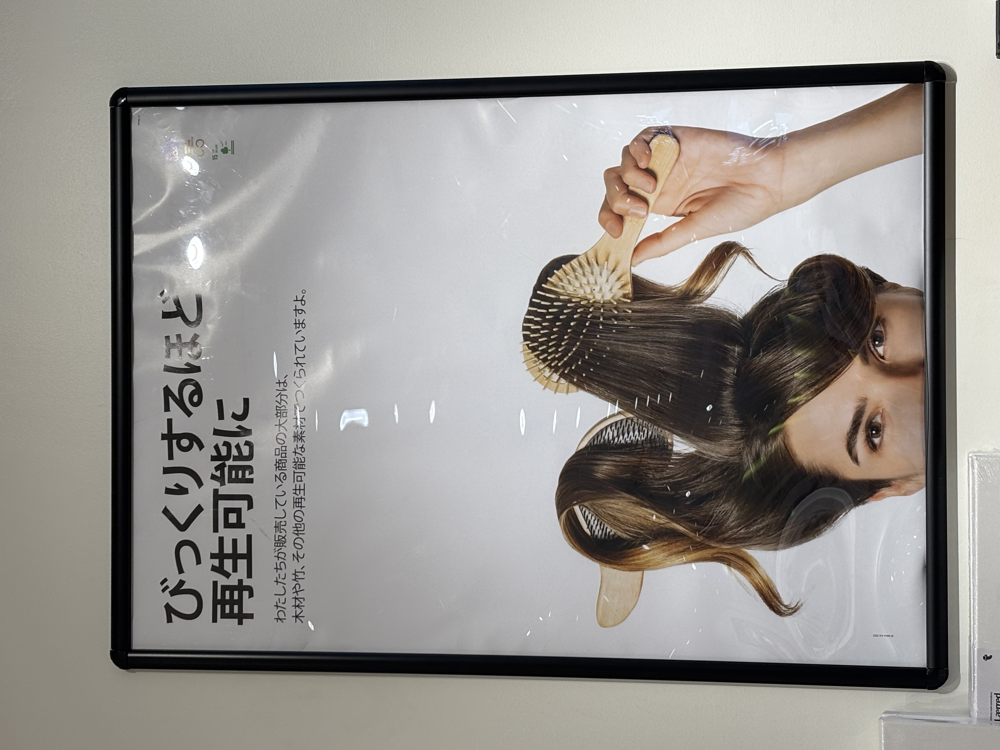
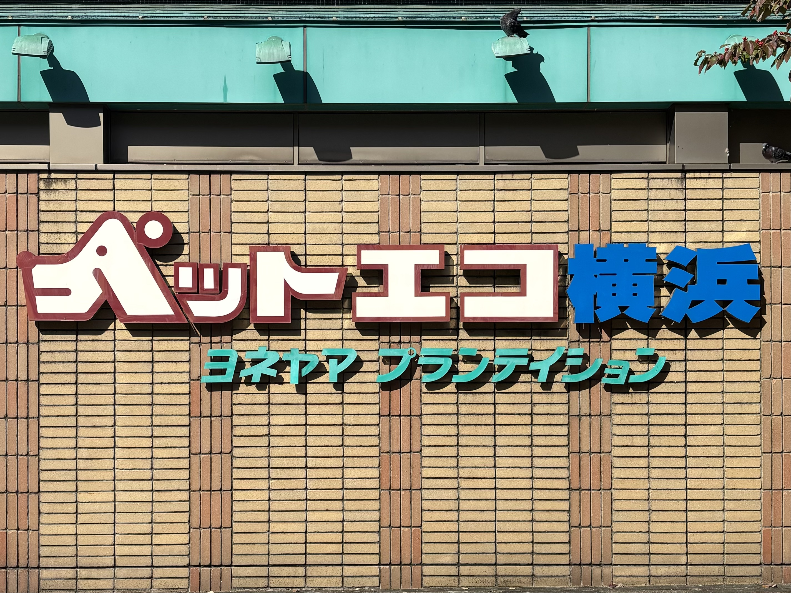

路上観察
📍Flying Tiger Copenhagen

撮影日：2024年10月6日
撮影者：yuina
書いてある日本語が「英文をそのまま翻訳した」みたいな文章。
下の画像も再生可能とあまり関係なさそうでおもしろい。
不思議なポスターだが、環境に優しい商品を販売していることが分かった。
📍ペットエコ 都築店

撮影日：2024年10月13日
撮影者：yuina
ペットショップの壁に書いてある看板。
「ぺ」の文字が犬の横顔になっているところが印象的。
一目でペットショップであることが分かるデザインであると思う。